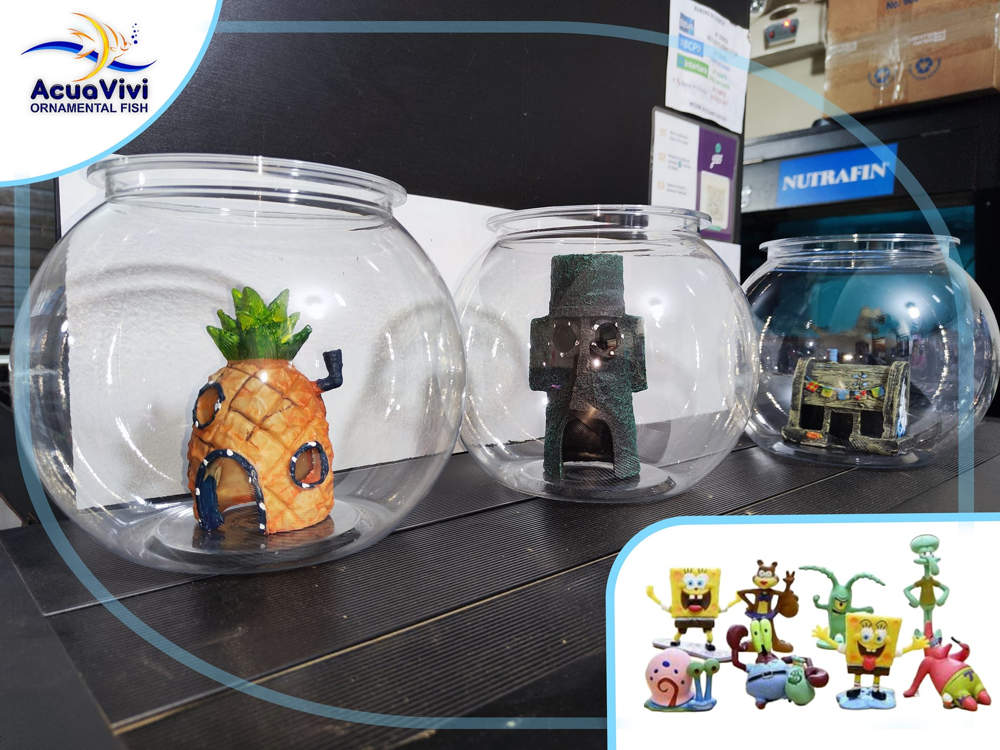
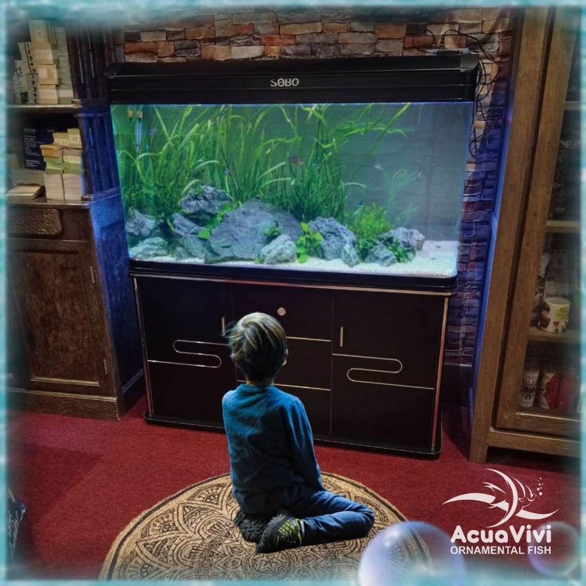
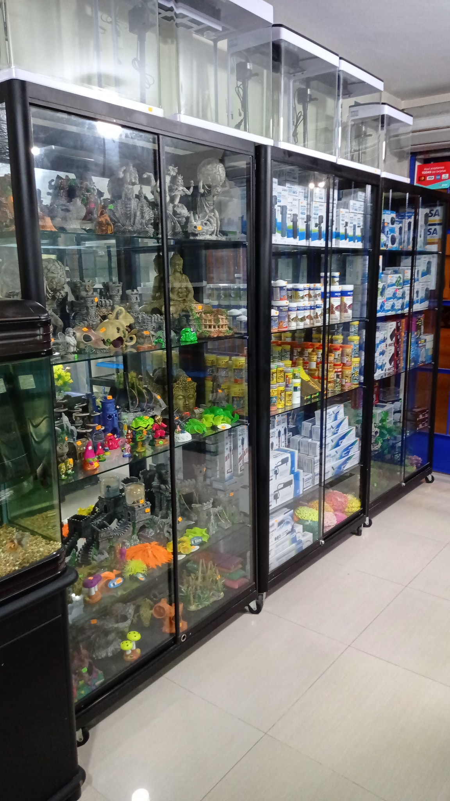
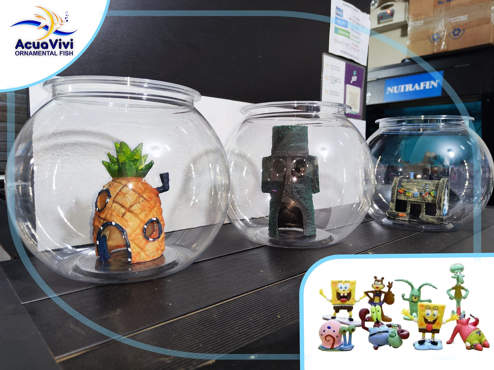
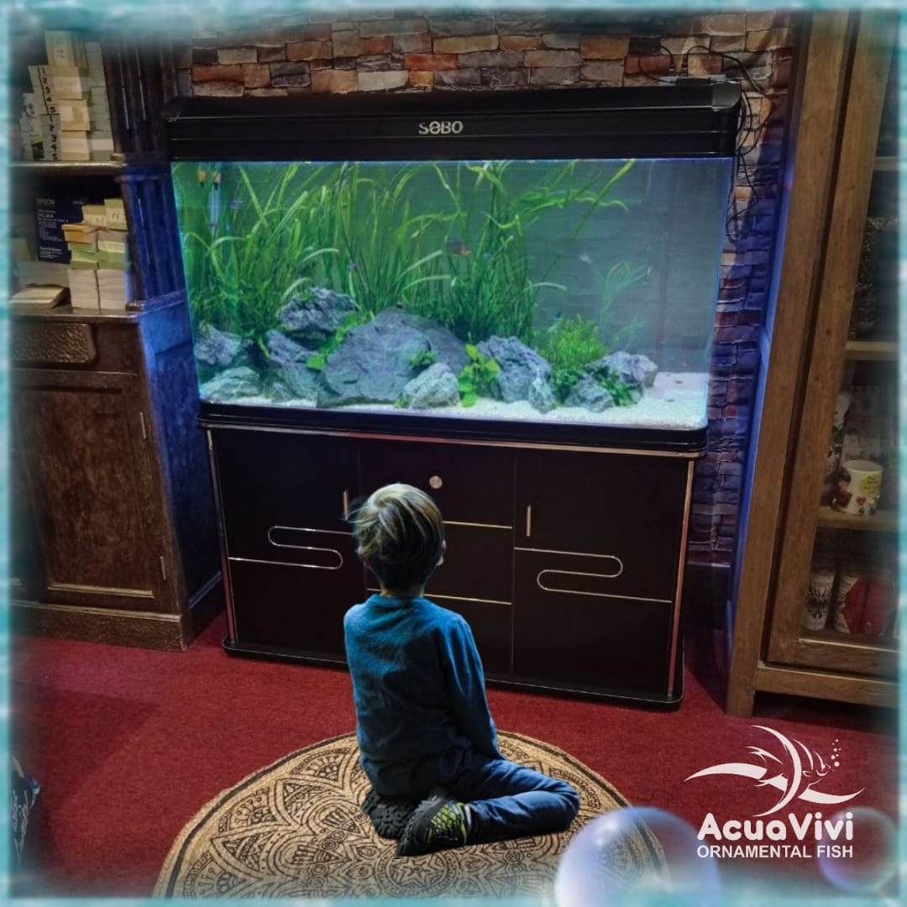
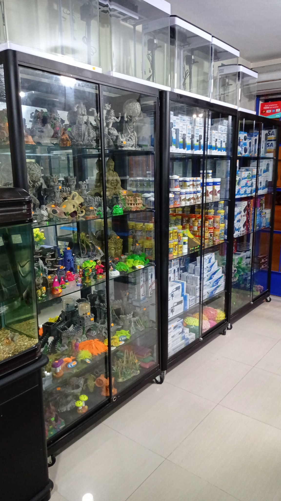

Bienvenido a Acuavivi
Criando peces ornamentales desde el 2010
Nuestra Historia
Desde el año 2010, Acuavivi Ornamental Fish se dedica a la crianza, cuidado y venta de peces ornamentales de alta calidad. Con más de 14 años de experiencia, llevamos el mundo acuático a hogares, negocios y apasionados del acuarismo en Nuevo Chimbote y todo el Perú.